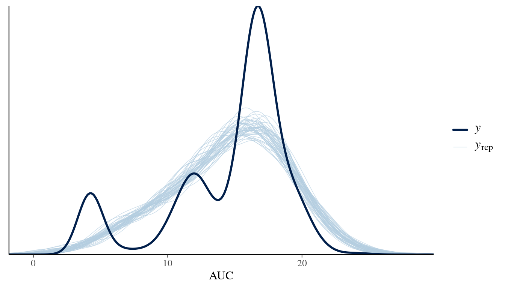
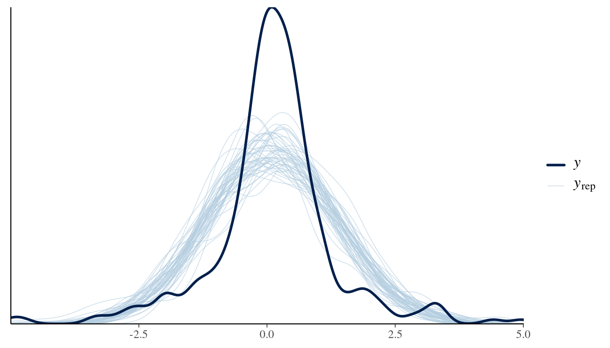
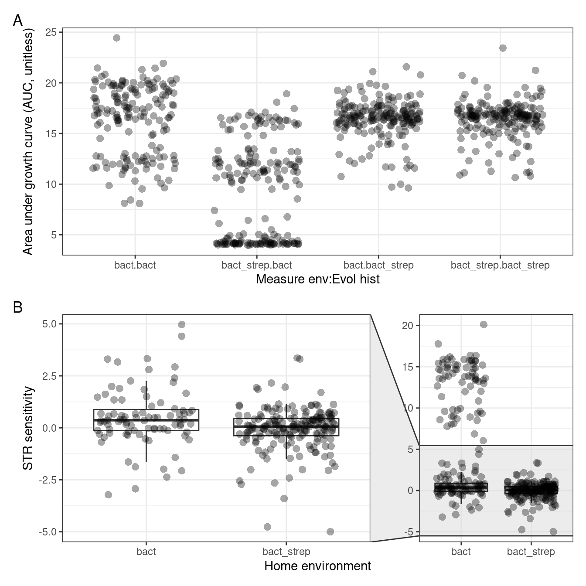

Analysis of growth summary data
From the STR clones workflow
1 Setup
Load required packages
2 Read data
Experiment information (e.g., which wells correspond to which clones from which condition)
Show/hide code
mddf <- read_tsv(
here::here(data_raw, "metadata.tsv"),
col_types = list(
plate = col_character(),
well = col_character(),
clone_id = col_double(),
experiment_treatment = col_character(),
LTCSE_treatment = col_character(),
replicate = col_character(),
lagtime = col_time(format = "%T"),
max_growth_death_rate = col_double(),
time_to_stationary = col_time(format = "%T")
)
) %>%
filter(measure_env %in% c("bact", "bact_strep")) %>%
filter(evolution_env %in% c("anc", "bact", "bact_strep")) %>%
mutate(
measure_env_short = case_when(
measure_env == "bact" ~ "Meas: B",
measure_env == "bact_strep" ~ "Meas: BS"
)
) %>%
mutate(
home_env_short = case_when(
evolution_env == "anc" ~ "Home: Anc",
evolution_env == "bact" ~ "Home: B",
evolution_env == "bact_strep" ~ "Home: BS"
)
) %>%
mutate(
measure_env_short = factor(
measure_env_short,
levels = c("Meas: B", "Meas: BS")
),
home_env_short = factor(
home_env_short,
levels = c("Home: Anc", "Home: B", "Home: BS")
),
replicate = factor(replicate),
clone_id = factor(clone_id)
)Blacklist (i.e., samples that have been manually inspected and should be excluded due to strange features)
Growth summary data
3 Formatting
Anti join black list to growth curves to remove the bad growth curves and join to experiment metadata
Subset, pivot, and calculate difference between bacteria only and bacteria + streptomycin. In the variables it is called fitness although that is kind of a misnomer. What it actually measures is the excess growth of each clone without streptomycin relative to growth of that same clone with streptomycin.
4 Compare AUC
4.1 Plot raw data
Show/hide code
p01 <- ggplot2::ggplot(auc_gr_md, aes(x = interaction(measure_env, evolution_env), y = auc)) +
ggplot2::geom_point(position=position_jitter(width=0.35), size=3, alpha = 0.35, stroke = 0) +
ggplot2::labs(x = "Measure env:Evol hist", y = "Area under growth curve (AUC, unitless)") +
ggplot2::theme_bw()
p01bact, streptomcyin/bact_strep) grown either with or without streptomycin (bact or bact_strep, respectively). The horizontal axis shows the interaction of evolutionary history and measurement environment (e.g., the first column shows background evolved bacteria grown without streptomycin).
A couple features to note… The difference in AUC with or without streptomycin appears small for streptomycin evolved clones (bact_strep:bact vs bact_strep:bact_strep). Clones from the streptomycin evolved community do not obviously appear to have suffered some kind of cost of resistance when growing without streptomycin. However, the differences in AUC with/without streptomycin are quite large for clones isolated from the background-evolved communities (bact:bact vs bact:bact_strep). Thus, many streptomycin sensitive clones appear to have been isolated from background community.
4.2 LMM fit
This models auc as a function of evolution history the measurement condition and the interaction between the two. We used replicate with clone_id nested within replicate as random effects (clones were measured more than once). We are using brms here so the traditional frequentist p-value doesn’t apply. Instead we think about the proportion of the posterior that has a consistent direction (e.g., over/under 0).
4.2.1 Posterior predictive check
doesn’t suggest anything amiss

4.2.2 Convergence check
All chains appear to have converged
4.2.3 Model parameters
4.2.4 Model Contrasts
What the contrast analysis shows is what was apparent from looking at Figure 1. Basically, clones from the streptomycin evolved communities don’t have significant growth differences with or without streptomycin, while clones from the background evolved communities do. This is pretty unsurprising I think.
5 Compare strep sensitivity of resistant clones
In Figure 1 it is clear that there are many clones from the background evolutionary history with poor growth in the streptomycin conditions (i.e., high streptomycin sensitivity). Since each clone was phenotyped in both measurement environments we can calculate a streptomycin ‘growth sensitivity’ as
\[ S_{i,j} = A_{i,j} - A_{i,j}^{STR} \] Where \(S_{i,j}\) is the sensitivity of clone \(i\) from microcosm \(j\) to streptomycin, \(A_{i,j}\) is the AUC for clone \(i\) from microcosm \(j\) growth without streptomycin and \(A_{i,j}^{STR}\) is the AUC for clone \(i\) from microcosm \(j\) growth with streptomycin.
When \(S_{i,j} \gt 0\) then the clone has more growth in the absence of streptomycin. If there is a clear growth differences between streptomycin and no-streptomycin conditions we should expect \(S_{i,j} \gt 0\). Alternatively, if a clone grows equally well with or without streptomycin then we could expect \(S_{i,j} \approx 0\).
Show/hide code
auc_gr_md_subset <- auc_gr_md %>%
dplyr::select(
auc,
measure_env,
evolution_env,
replicate,
clone_id
) %>%
pivot_wider(id_cols = c("evolution_env", "replicate", "clone_id"),
names_from = measure_env, values_from = auc) %>%
mutate(fitness = bact - bact_strep) %>%
mutate(flag = if_else(fitness < 5, TRUE, FALSE))Here we plot sensitivity for the two community evolutionary histories. Most clones from the streptomycin evolved community have an excess growth \(\approx 0\) (Figure 1). This indicates that the overwhelming majority of isolated clones were streptomycin resistant and growth under both conditions was similar. Many clones from the background evolved community have high growth excesses (values > 10, Figure 1). This indicates that many streptomycin sensitive clones were isolated from the background evolved community. However, there are also many clones with growth excess \(\approx 0\) which indicates that innately streptomycin resistant clones were also isolated from the background evolved community.
5.1 Plot strep sensitivity
Show/hide code
pexg <- tidyr::drop_na(auc_gr_md_subset) %>%
ggplot2::ggplot(aes(x = evolution_env, y = fitness)) +
ggplot2::geom_boxplot(data = filter(auc_gr_md_subset, fitness < 5), outliers = FALSE) +
ggplot2::geom_point(position=position_jitter(width=0.35), size=3, alpha = 0.35, stroke = 0) +
ggplot2::labs(x = "Home environment", y = "STR sensitivity") +
ggforce::facet_zoom(y = flag == TRUE) +
ggplot2::theme_bw()5.2 Sensitivity of intrinisically resistant clones
Note that above we observed clones from both evolution treatments that were intrinsically resistant to streptomycin. One question is whether the resistant clones from the background evolved community have a higher streptomycin sensitivity compared to resistant clones from the streptomycin evolved community. I would predict that clones from the background community that were already quite streptomycin resistant have a higher (\(S\)) sensitivity than those from the streptomycin evolved community because clones from the strep community would have had time to adapt/evolve to streptomycin.
We can test this prediction using a linear model for (\(S\)) sensitivity as a function of the evolution environment. First we filter to only include intrinsically resistant clones (operationally defined as those with sensitivity less than 5). Then we fit the model but with zero intercept so that we compare each group to 0 instead of using one group as the intercept.
5.2.1 LMM Fit
5.2.2 Posterior predictive check
doesn’t suggest anything amiss

5.2.3 Convergence check
All chains appear to have converged
5.2.4 Model parameters
So the results from the zero intercept model show that resistant clones from the background evolutionary history have a median Streptomycin sensitivity of 0.43 with a probability of direction (pd) of 95.5% while clones from the streptomycin evolutionary history communities have a mean sensitivity of -0.06 with a pd of about 62%. Sensitivity from the streptomycin history is statistically indistinguishable from zero, which makes sense and is consistent with what we saw in Figure 4.
However, it seems that resistant clones from the background community have a small but significantly higher sensitivity to streptomycin. Overall I don’t think this is too surprising that naturally resistant clones isolated from the evolution conditions with streptomycin are less sensitive to stretomycin than those that were evolving without it.
6 Final combined plot of AUC and S

- Area under the growth curve for 32 randomly isolated clones from six replicates of each evolutionary history (background/
bact, streptomcyin/bact_strep) grown either with or without streptomycin (bactorbact_strep, respectively). The horizontal axis shows the interaction of measurement environment with evolutionary history (e.g., the first column shows the no-streptomycin measurement for background evolved bacteria). Community streptomycin sensitivity from different evolutionary histories of the pre-experiment. For each clone phenotyped with or without streptomcyin the streptomycin sensitivity is defined as \(S_{i,j} = A_{i,j} - A_{i,j}^{STR}\) where \(S_{i,j}\) is the sensitivity of clone \(i\) from microcosm \(j\) to streptomycin, \(A_{i,j}\) is the AUC for clone \(i\) from microcosm \(j\) growth without streptomycin and \(A_{i,j}^{STR}\) is the AUC for clone \(i\) from microcosm \(j\) growth with streptomycin.